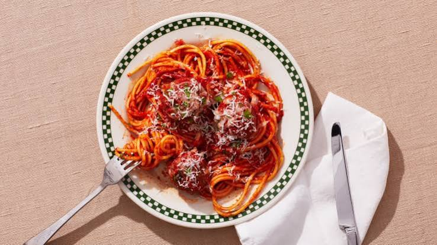

Back to Main Page
Italian Spaghetti Sauce with Meatballs

Description
Italian Spaghetti Sauce with Meatballs is a foundational culinary classic that brings the authentic warmth of an Italian Sunday dinner right to your kitchen table. This iconic dish features tender, succulent meatballs—crafted from a seasoned blend of ground meats, herbs, and cheese—simmered directly inside a vibrant, slow-cooked tomato sauce infused with garlic, basil, and olive oil.
The secret to this recipe's deep, complex flavor lies in the simmering process, which allows the savory juices of the meatballs to enrich the tangy marinara. The result is a velvety, robust sauce that clings perfectly to long strands of al dente spaghetti, making it a hearty and universally loved meal for both casual weeknights and festive gatherings.
Ingredients
- Ground meat: 1 pound (a mix of ground beef and pork, or all beef)
- Spaghetti pasta: 1 pound
- Crushed tomatoes: 2 cans (28 ounces each)
- Tomato paste: 2 tablespoons
- Breadcrumbs: 1/2 cup (Italian seasoned)
- Parmesan cheese: 1/4 cup, freshly grated
- Egg: 1 large, beaten
- Onion: 1 medium, finely chopped
- Garlic: 4 cloves, minced (divided for meatballs and sauce)
- Olive oil: 2 tablespoons
- Italian seasoning: 2 teaspoons
- Fresh basil: 1/4 cup, chopped
- Salt and black pepper: To taste
Steps
- Prepare the meatball mixture: Combine the ground meat, breadcrumbs, Parmesan cheese, beaten egg, half of the minced garlic, salt, and black pepper in a large bowl, mixing gently with your hands until just combined.
- Shape the meatballs: Roll the mixture into even, golf-ball-sized spheres and place them onto a clean plate or baking sheet.
- Sauté the aromatics: Heat the olive oil in a large pot or Dutch oven over medium heat, add the chopped onion and the remaining minced garlic, and sauté for 3 to 4 minutes until soft and fragrant.
- Build the sauce base: Stir the tomato paste into the pot for 1 minute, then pour in the crushed tomatoes and add the Italian seasoning, salt, and black pepper.
- Simmer the meatballs: Gently drop the raw meatballs directly into the simmering tomato sauce, ensuring they are completely submerged so they cook through evenly.
- Slow-cook the sauce: Turn the heat down to low, cover the pot, and let everything simmer gently for 30 to 40 minutes, stirring occasionally, until the meatballs are tender and cooked through.
- Cook the spaghetti: Bring a large pot of salted water to a rolling boil and cook the spaghetti pasta according to the package instructions until it reaches perfect al dente texture.
- Finish the sauce: Remove the sauce from the heat, stir in the fresh chopped basil, and adjust the seasoning with extra salt and pepper to taste.
- Combine and serve: Drain the spaghetti, plate the hot pasta, and ladle a generous amount of the rich meatball sauce right over the top before serving.